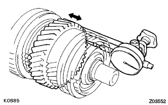
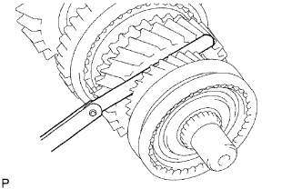
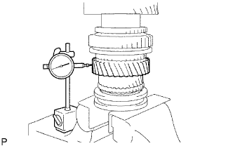
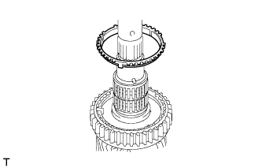

ВЫХОДНОЙ ВАЛ > РАЗБОРКА |
| 1. ПРОВЕРЬТЕ ОСЕВОЙ ЗАЗОР ШЕСТЕРНИ 1-Й ПЕРЕДАЧИ |
|  |
С помощью индикатора часового типа измерьте осевой зазор.
| 2. ПРОВЕРЬТЕ ОСЕВОЙ ЗАЗОР ШЕСТЕРНИ 2-Й ПЕРЕДАЧИ |
С помощью индикатора часового типа измерьте осевой зазор.
| 3. ПРОВЕРЬТЕ ОСЕВОЙ ЗАЗОР ШЕСТЕРНИ 3-Й ПЕРЕДАЧИ |
|  |
С помощью комплекта плоских щупов измерьте осевой зазор.
| 4. ПРОВЕРЬТЕ РАДИАЛЬНЫЙ ЗАЗОР ШЕСТЕРНИ 1-Й ПЕРЕДАЧИ |
 |
С помощью индикатора часового типа измерьте радиальный зазор.
| 5. ПРОВЕРЬТЕ РАДИАЛЬНЫЙ ЗАЗОР ШЕСТЕРНИ 2-Й ПЕРЕДАЧИ |
 |
С помощью индикатора часового типа измерьте радиальный зазор.
| 6. ПРОВЕРЬТЕ РАДИАЛЬНЫЙ ЗАЗОР ШЕСТЕРНИ 3-Й ПЕРЕДАЧИ |
|  |
С помощью индикатора часового типа измерьте радиальный зазор.
| 7. СНИМИТЕ ШЕСТЕРНЮ 1-Й ПЕРЕДАЧИ |
С помощью SST и пресса снимите шестерню 5-й передачи, центральный подшипник выходного вала, упорную шайбу шестерни 1-й передачи и шестерню 1-й передачи с выходного вала.
| 8. СНИМИТЕ НАБОР БЛОКИРУЮЩИХ КОЛЕЦ СИНХРОНИЗАТОРА № 1 (для шестерни 1-й передачи) |
|  |
Снимите блокирующие кольца синхронизатора с выходного вала.
| 9. СНИМИТЕ ШТИФТ УПОРНОЙ ШАЙБЫ ШЕСТЕРНИ 1-Й ПЕРЕДАЧИ |
Снимите штифт упорной шайбы с выходного вала.
| 10. СНИМИТЕ ИГОЛЬЧАТЫЙ РОЛИКОВЫЙ ПОДШИПНИК ШЕСТЕРНИ 1-Й ПЕРЕДАЧИ |
Снимите игольчатый роликовый подшипник с выходного вала.
| 11. СНИМИТЕ РАСПОРНУЮ ВТУЛКУ ПОДШИПНИКА ШЕСТЕРНИ 1-Й ПЕРЕДАЧИ |
Снимите распорную втулку подшипника с выходного вала.
| 12. СНИМИТЕ ПРУЖИННОЕ СТОПОРНОЕ КОЛЬЦО ВАЛА ПОДШИПНИКА |
С помощью 2 отверток и молотка выбейте пружинное стопорное кольцо с выходного вала.
| 13. СНИМИТЕ ШЕСТЕРНЮ 2-Й ПЕРЕДАЧИ |
С помощью SST и пресса снимите ступицу скользящей муфты трансмиссии № 1 с шестерней передачи заднего хода, набор блокирующих колец синхронизатора № 1 и шестерню 2-й передачи с выходного вала.
| 14. СНИМИТЕ ИГОЛЬЧАТЫЙ РОЛИКОВЫЙ ПОДШИПНИК ШЕСТЕРНИ 2-Й ПЕРЕДАЧИ |
Снимите игольчатый роликовый подшипник с выходного вала.
| 15. СНИМИТЕ ШЕСТЕРНЮ ПЕРЕДАЧИ ЗАДНЕГО ХОДА |
Снимите шестерню передачи заднего хода, 3 сухаря механизма синхронизации № 1 и 3 пружины сухарей механизма синхронизации.
| 16. СНИМИТЕ ПРУЖИННОЕ СТОПОРНОЕ КОЛЬЦО УСТАНОВОЧНОГО ВАЛА СТУПИЦЫ МУФТЫ |
С помощью съемника стопорных колец снимите пружинное стопорное кольцо с выходного вала.
| 17. СНИМИТЕ ШЕСТЕРНЮ 3-Й ПЕРЕДАЧИ |
С помощью SST и пресса снимите ступицу скользящей муфты трансмиссии № 2 со скользящей муфтой трансмиссии № 2, блокирующее кольцо синхронизатора № 2 и шестерню 3-й передачи с выходного вала.
| 18. СНИМИТЕ ИГОЛЬЧАТЫЙ РОЛИКОВЫЙ ПОДШИПНИК ШЕСТЕРНИ 3-Й ПЕРЕДАЧИ |
Снимите игольчатый роликовый подшипник с выходного вала.
| 19. СНИМИТЕ СКОЛЬЗЯЩУЮ МУФТУ ТРАНСМИССИИ № 2 |
 |
Снимите скользящую муфту № 2, 3 пружины сухарей механизма синхронизации № 2 и 3 сухаря механизма синхронизации № 2 со ступицы скользящей муфты № 2.